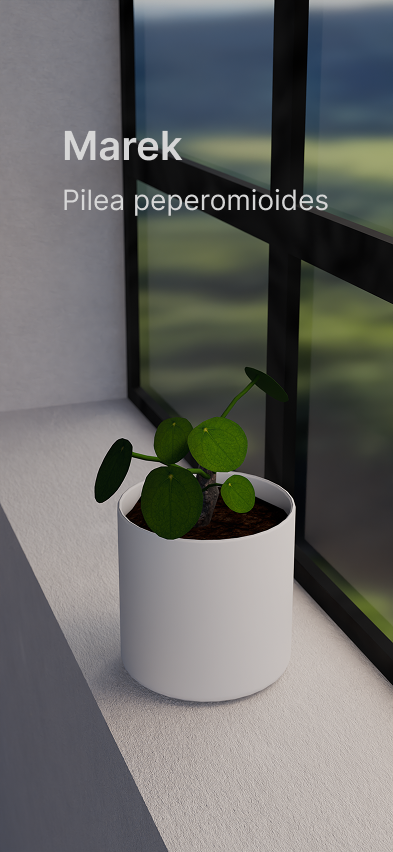
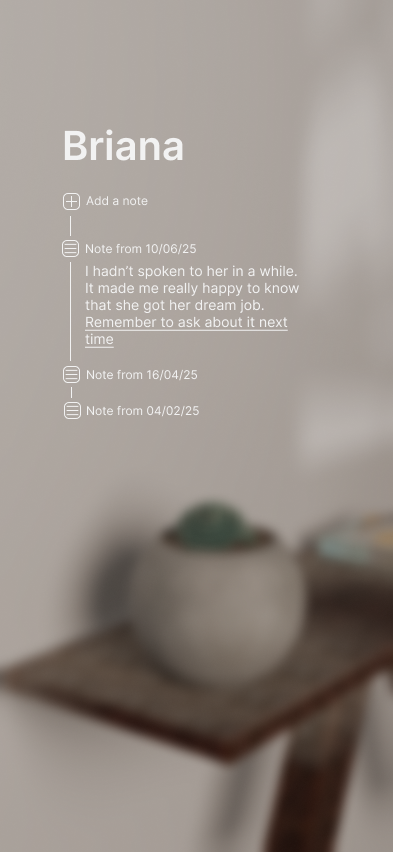
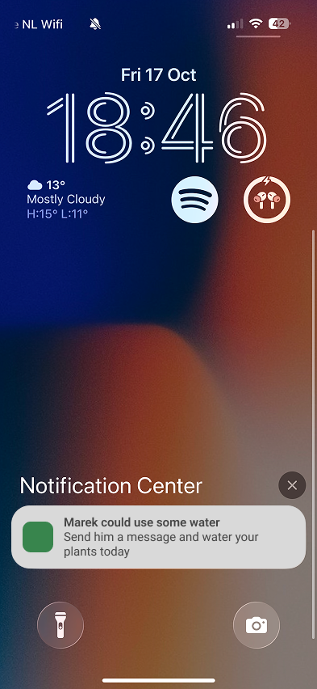
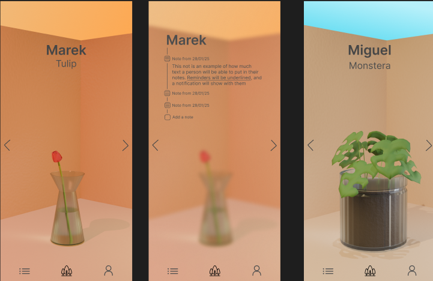

Garden
Date
Ongoing
Project Type
Personal
Roles
Product Design, Interaction Design
Skills
Concept Development, Visual Design, Mobile Product Thinking
Garden is a personal project that I am developing. It is meant to be a different style of relationship manager, built around the idea that the nodes closest to you are often the ones that make you the strongest.
When I moved away from home, I found myself leaving behind more than just a location. People I used to see every day became people I called once a week, and I was watching relationships I had cultivated for years slowly wither.
Garden was my answer to this tension. Instead of focusing on the excitement of meeting new people, it emphasizes the care required for long term bonds.


The plant care metaphor does a lot of heavy lifting across the interaction model. It borrows from Tamagotchi-like care loops and applies them to human connection: when a plant is neglected, you feel it, and when a plant thrives, the atmosphere around it changes.
Like plants, human connections require different rhythms of attention and affection. Garden treats every relationship as something with individualized needs, instead of forcing every person into the same reminder pattern.
Water, fertilizer, and sunlight become a way to think about reaching out at the right time, remembering details from previous conversations, and mixing texts, calls, and in-person time.
For the visual language, I spent a lot of time walking. Living in the Netherlands gave me an unexpected vantage point: I could see into people's houses. That small observation became the base of the design language.
The interface uses transparent materials so that, even deep in menus, the plant remains center stage. Relationship care stays visible instead of becoming another buried productivity task.
Core mechanisms include watering reminders, memory logs, timezone awareness, and prompts that encourage different styles of outreach.


Version 1 of Garden was not particularly polished, but it was intentional: a calendar with my relationships, contact details, plant type, and a logbook kept in my notes app.
It solved my problem, even though I constantly wished it looked nicer. I am learning mobile development frameworks so that version 2 can become something others can use.
In the meantime, my relationships will continue growing in my calendar.